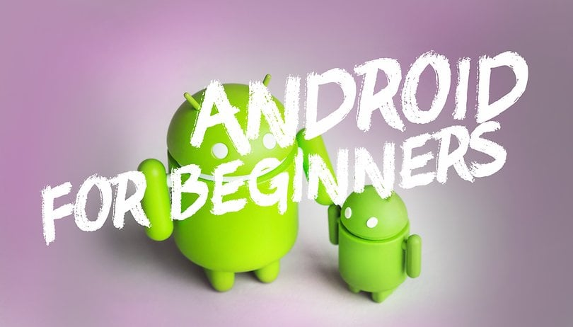
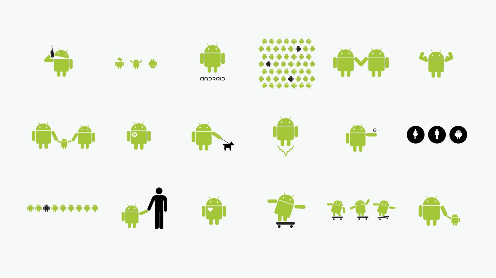

O que é
O Android é um sistema em forma de robo que possibilita a interação dos usuários com diversos conteúdos em realidade aumentada. Também chamado de Project Android, o eletrônico é capaz de tirar fotos a partir de comandos de voz, enviar mensagens instantâneas e realizar vídeoconferências. Seu lançamento está previsto para 2014, e seu preço deve ser de US$ 1,5 mil. Atualmente o Google Glass encontra-se em fase de testes e já possui um vídeo totalmente gravado com o dispositivo. Além disso, a companhia de buscas registrou novas patentes anti-furto e de desbloqueio de tela para o acessório.
Data de lançamento
Android, Inc. foi fundada em Palo Alto, California em outubro de 2003 por Andy Rubin (cofundador da Danger), Rich Miner (co-fundador da Wildfire Communications, Inc.), Nick Sears (ex-vice-presidente da T-Mobile), e Chris White (encabeçou o projeto de desenvolvimento de design e interface da WebTV) para desenvolver, segundo o Rubin, "dispositivos móveis mais inteligentes que estejam mais cientes das preferências e da localização do seu dono". As primeiras intenções da empresa eram de desenvolver um sistema operacional avançado para câmeras digitais, quando se deram conta de que o mercado destes dispositivos não era grande o suficiente. Desviaram então seus esforços para produzir um sistema operacional móvel para ser rival aos Symbian e Windows Mobile. Apesar daquelas últimas conquistas dos fundadores e primeiros empregados, Android Inc. operou secretamente, revelando somente que estava trabalhando em um software para smartphones. Naquele mesmo ano Andy Rubin ficou financeiramente escasso. Steve Pearlman, amigo íntimo de Rubin, entregou a ele dez mil dólares em um envelope e recusou sua parte na companhia.
Interface
Como o mundo vai aparecer
A interface padrão do usuário no Android é baseada na manipulação direta. A resposta para a manipulação é desenhada para ser imediata e produzir uma sensação de fluidez, utilizando-se constantemente da resposta háptica para informar o usuário sobre a conclusão do comando. Hardwares internos como acelerômetros, giroscópios e sensores de proximidade são utilizados por alguns aplicativos para responder à ações adicionais do usuário, como por exemplo a mudança da orientação da tela de retrato para paisagem, dependendo de como o dispositivo é segurado ou o controle de jogos automotivos somente pela rotação do smartphone, como se fosse um volante de carro.
Criadora do Android
Irina Blok
.jpg)
Com o Google Glass será possível tirar fotos com até 5 megapixels e gravar vídeos com 720 linhas de resolução. Os primeiros vídeos e fotos capturados com o aparelho já começaram a circular pela rede, mas até agora ninguém tem muitas informações técnicas.
Aplicativos
Desenvolvimento de software para android
Os aplicativos ou apps (abreviação do inglês applications) um programa computacional que estendem funcionalidades dos dispositivos computacionais portáteis, poder ser desenvolvidos com as linguagens de programação Kotlin, Java, ou C++, usando o sistema nativo de desenvolvimento do software Android (abreviado SDK). Este inclui um compreensivo conjunto de ferramentas de desenvolvimento, que incluem: depurador, biblioteca, emulador baseado em QEMU, documentação, códigos de exemplos e, tutoriais. O ambiente de desenvolvimento integrado oficialmente suportado é o Eclipse utilizando o plugin do Android (ADT). Outras ferramentas de desenvolvimento estão disponíveis, como o Google App Inventor, um ambiente de desenvolvimento para novos desenvolvedores, e múltiplas plataformas de desenvolvimento cross-plataform.[70]
Memoria
Como de ser o gerencionamento de memoria?
Já que dispositivos Android são normalmente movidos à bateria, o sistema foi desenvolvido para gerir a quantidade de memória (RAM) com o intuito de deixar a quantidade de energia gasta no mínimo, em contraste com desktops em que normalmente sistemas assumem estar conectados à fontes ilimitadas de eletricidade doméstica. Quando um aplicativo não está mais sendo usado, o sistema automaticamente o suspende da memória; enquanto a aplicação está tecnicamente "aberta", aplicações suspensas não consomem nenhum recurso do sistema. Isso traz um benefício duplo, já que aumenta a responsividade do sistema, enquanto também não consome energia sem necessidade.
Hardware
Já que dispositivos Android são normalmente movidos à bateria, o sistema foi desenvolvido para gerir a quantidade de memória (RAM) com o intuito de deixar a quantidade de energia gasta no mínimo, em contraste com desktops em que normalmente sistemas assumem estar conectados à fontes ilimitadas de eletricidade doméstica. Quando um aplicativo não está mais sendo usado, o sistema automaticamente o suspende da memória; enquanto a aplicação está tecnicamente "aberta", aplicações suspensas não consomem nenhum recurso do sistema. Isso traz um benefício duplo, já que aumenta a responsividade do sistema, enquanto também não consome energia sem necessidade.